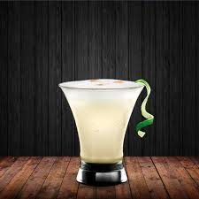
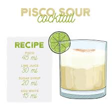

Pisco Sour

Ingredients:
- Pisco 45 ml
- Lime Juice 30 ml
- Sugar Syrup 20 ml
- Egg White 15 ml
- Crushed Ice 100 ml
Steps:
- On a cold glass, put the ice
- Mix the lime juice, pisco, sugar syrup, egg whyte
- Pour the mix into the glass
- Now it is ready to be drinked!
- ENJOY

Back to Homepage